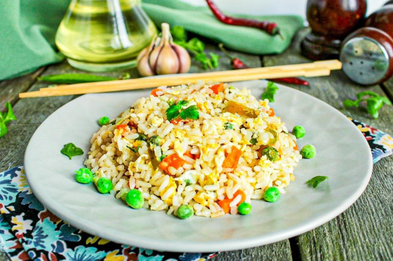

Жаренный рис с яйцом (быстрый обед из вчерашнего риса)

Ингредиенты (4 порции):
Вчерашний рис - 200-300 грамм
Репчатый луч - половина луковицы
Морковь - 1 штука
Чеснок - 2 зубчака
Соевый соус - 4 столовых ложки (заменит соль, осторожно, можно пересолить)
Яйца - 4 шт
Зеленый консервированный горошек - 100 грамм
Консервированная кукуруза - 100 грамм (или только горошек 200 грамм)
Зеленый лук и кунжутные семечки - для украшения (опционально)
Перец добавить по вкусу
Приготовление:
1. Режем мелко лук, чеснок и морковь.
2. Разбиваем яйца в миску и перемешиваем до однородной массы.
3. Ставим на плиту вок или глубокую сковородку, вливаем яйа и непрерывно перемешиваем, чтобы они разбили на мелкие кусочки.
4. Затем добавляем лук и морковь. перемешиваем чтобы яйцо не подгорало и овощи обжаривались. Жарим 2 минуты.
5. Затем добавляем чеснок. И жарим 1 минуту.
6. Всыпаем горошек и кукурузу, жарим еще 2 минуты, постоянно помешивая (ничего не должно подгорать, это испортит вкус).
7. Всыпаем рис, разбиваем его кусок на мелкие части.
8. Вливаем соевой соус по вешнему краю сковороды, и перемешиваем. Жарим еще 1 минуту.
9. Накладываем, украшаем зеленым луком и кунжутными семечками.